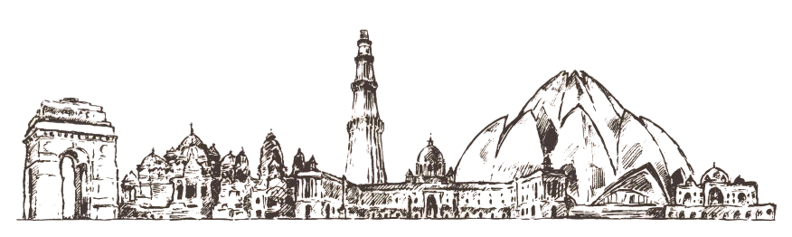

Welcome to the Logic Society of Delhi (LSD). LSD is an organization of researchers from various disciplines with an interest in logic, from across the great Delhi area. The primary aim of the society is to build a logic community in the Delhi area, promote research and education in logic, and its applications.
The activities of the Logic Society of Delhi include:
- Seminar Series: A rotating seminar series hosted across institutions in the area, with hybrid and recorded formats to promote accessibility and engagement in ongoing research and discussions within logic and its applications.
- Quarterly Networking Events: Informal gatherings to facilitate collegial relationships and exchanges among researchers working in or interested in the field of logic.
- Student Clinics: Structured sessions for students to discuss their work in progress and receive constructive feedback from established researchers and peers.
Please use this form to sign up to our mailing list.
news:
April 2025: The DLMPST Commission on Logic Education will host a webinar by Professor Maria Manzano on Tools for Teaching Logic. on April 8, 2025 at 12:00 GMT/ 19:30 IST.
Join via Zoom: Meeting Link (Passcode: udayana)